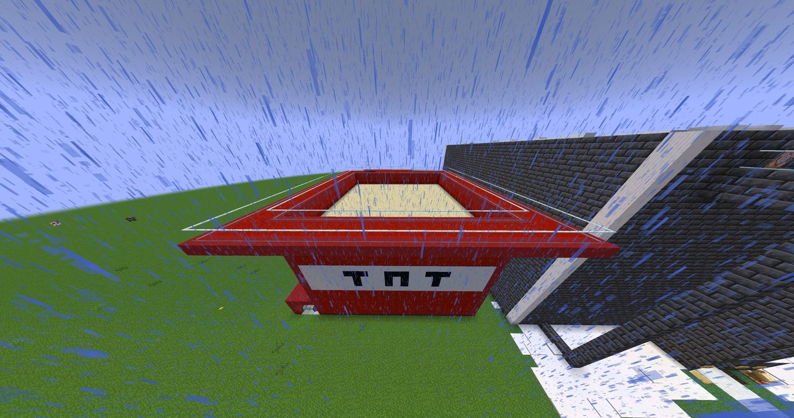

In a major surprise to everyone in MiniGame Land, TNT Run Deluxe 1.0 is officially open and available to the public.
The new arena opened ahead of the planned July 1 expansion project, giving players an early look at one of MiniGame Land's newest major attractions. Officials say the game is fully replayable, automated, and built to support both public matches and solo practice. TNT Run Deluxe is now expected to become one of the main competitive games in MiniGame Land.
How the Game Works
TNT Run Deluxe uses classic step-off floor decay gameplay. When a player steps on a block, the floor beneath them disappears about 0.4 seconds later, forcing everyone to keep moving. The arena includes three supported floor layers:
Floor Layers
- Layer 1 — Y -46
- Layer 2 — Y -52
- Layer 3 — Y -57
Players fall through each layer until they reach the lava pit. Anyone who falls to Y -59 or below is eliminated and sent to spectator mode. The last player standing wins.
Game Flow
Every match begins with a 5-second countdown before the floor goes live, with 3, 2, 1 title alerts and sound cues. The game follows a stable flow: Start, Countdown, Play, Winner or Draw Detection, then End and Reset.
The system automatically detects the winner when only one player remains. If everyone falls at once, the match ends in a draw. A built-in safety time limit, set by default to 300 seconds, prevents matches from lasting forever — if reached, all remaining survivors share the win.
Infinitely Replayable Floor System
TNT Run Deluxe is not a one-and-done arena. The floor is rebuilt from scratch every time the game starts and ends, making the arena fully reusable. Stray TNT and marker entities are cleared from the play area during rebuilds to keep the game stable. A manual [Rebuild Floor] option is also available for staff or players who need to reset the arena by hand.
Rewards and Stats
Player wins are recorded on the TNTWins leaderboard, which can be shown on the sidebar. The game also tracks each player's best survival time. It's connected to the DaveNBusters arcade ticket system:
Ticket Rewards
- Winner — 2 Tickets
- Eliminated Players — 1 Ticket
The ticket payout system is toggleable, so it can be safely turned off if the arcade ticket pack is not loaded.
Player Experience
TNT Run Deluxe is designed to feel like a polished MiniGame Land attraction, with a bossbar showing players alive, a countdown bossbar, a GO title alert, elimination messages, win and draw announcements, sound feedback, and actionbar updates. Eliminated players stay in the match as spectators, watching the rest of the round instead of being removed.
Clickable Menu
Players can open the TNT Run Deluxe menu with /function tntrun:menu. The menu includes Start, Solo Practice, Stop/Reset, Rebuild Floor, and Leaderboard. Solo Practice lets one player test the arena alone without instantly winning — useful for practice, testing, and teaching new players how the floor works.
Tunable Settings
Difficulty can be changed without editing files, using scoreboard settings:
Tunable Options
- #decay_delay — how fast blocks collapse (default 8 ticks; lower is harder)
- #time_limit — the safety time limit (default 300 seconds)
- #tickets_enabled — turns DaveNBusters ticket payouts on or off
A Surprise Opening
The opening of TNT Run Deluxe 1.0 came as a surprise, especially since the full MiniGame Land Expansion Project isn't scheduled until July 1, 2026. Many visitors expected it to arrive later alongside attractions like Mini Golf, Xscape Escape Rooms, and Murder Mystery. Instead, players can jump into the arena today. Officials say the surprise release gives the district early momentum before the larger expansion begins.
“Keep moving, or the floor becomes history.”